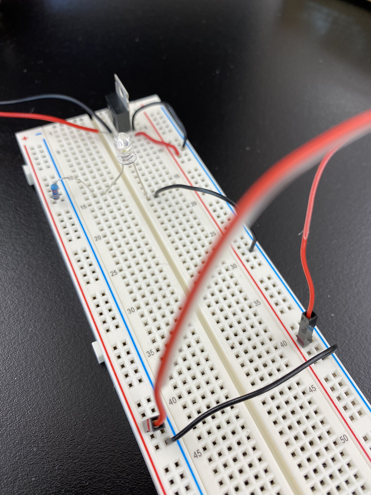

Fantasy Device: I created a wearable flower communicator. It was created out of found objects around the ITP floor. I worked wtih Sammy Nelson on these prototypes. The flower communicator measures your stress levels as a reminder to take care of yourself. The communicator aspect of it would tell the rest of your "garden" or home pod of people you are connected with how your plant is. There plants are real plants that grow stronger when you take care of it.
The components that I gathered.
Here I had to poke deeper holes into the breadboard since my components would not go in all the way. The nano needed to be prepped.
Using a multimeter, it was difficult to get the multimeter to work since these did not work often.
There was a problem finding power supplies to fit so I had to screw wires into an adapator.
Here I ended up using a toggle switch since I was not having luck with the push toggle.
© Copyright 2018-2021